Media Kit
Make the pitch.
Your approved iconA little Google clarity.
A little Apple focus. Entirely Foam.
Six ideas to react to. Keep the parts you like; we can mix them together.
Concept page · September 2026
A simple promise, recognisable products and room for the work.
FOR CREATORS AND THEIR CHAMPIONS
Find the right moment. Build the story. Send the pitch.
Meet the tools that make it all feel a little easier.
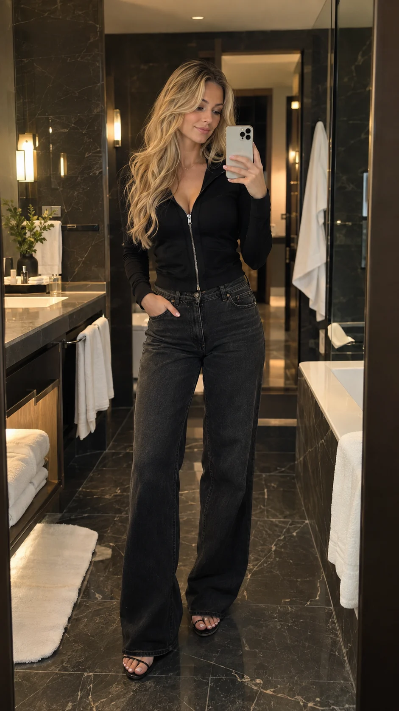
Your talent.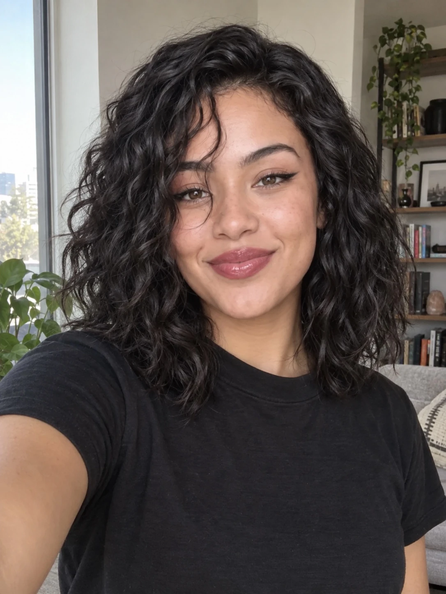
Beauty. In her own way.
Ready to share ↗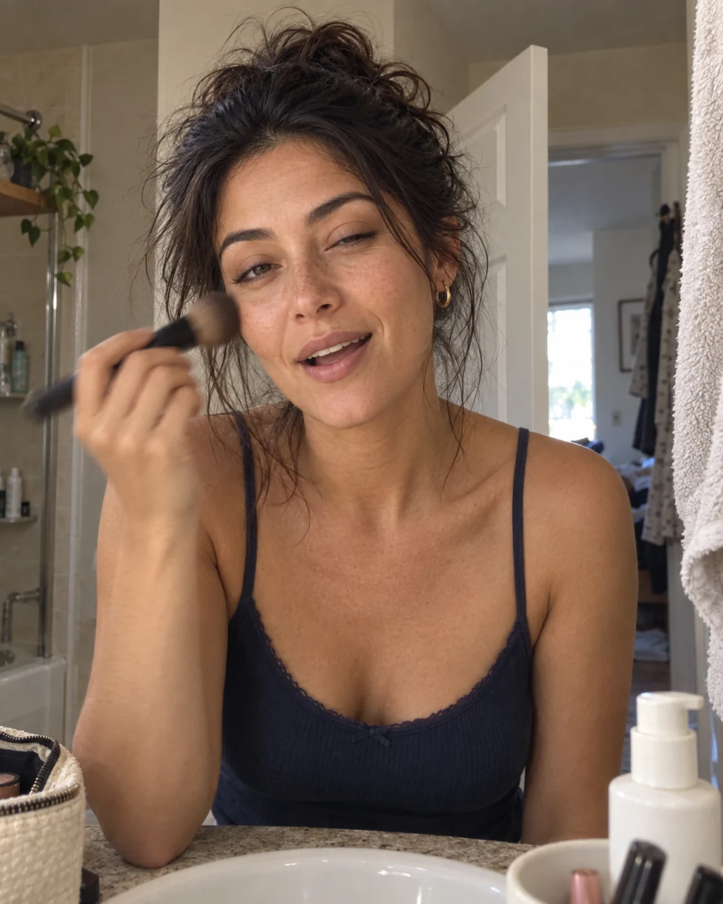
Their work.Great fit.
Let’s make
it happen.
Let every tool have its own character, with the same Foam DNA.
THE FOAM TOOLKIT
A familiar little face for every part of your day.
Make the pitch.
Your approved iconFind the moment.
New icon ideaYour people, together.
New icon ideaRight where you work.
Existing store markSoft shapes. A shared palette. One clear job per icon.
Large on the website.
Simple companion symbols in the app.
Google’s useful simplicity, with a larger, more tangible product preview.
FOAM MEDIA KIT
Their best work, their audience and the story that makes them right for the brief. All in one beautiful link.
See the media kit story ↗Simple routines.
A fresh point of view.
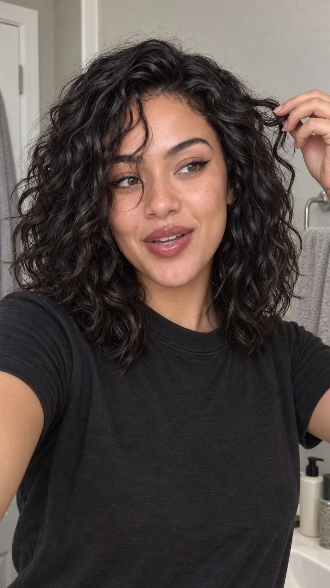
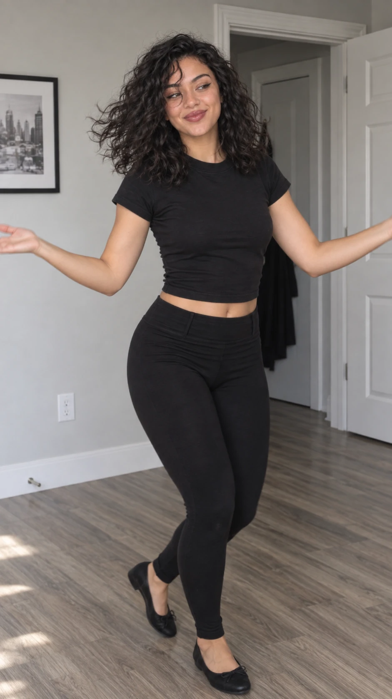
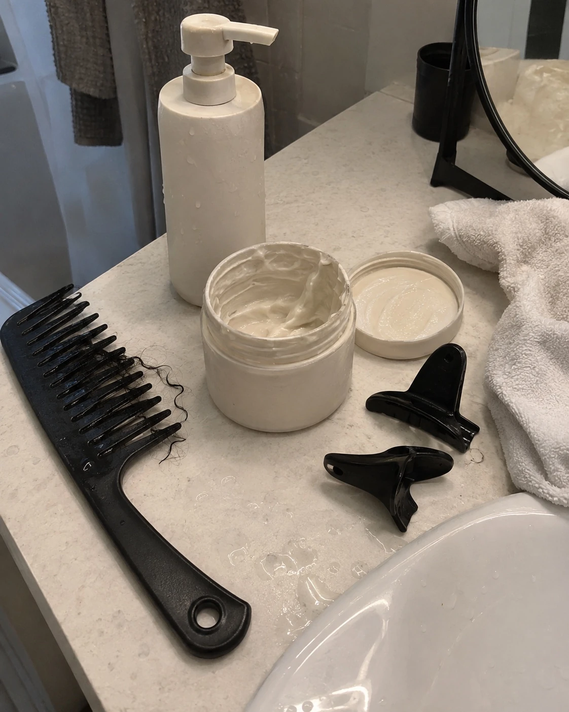
FOUND WITH FOAM
The look, the line, the moment you remember. Describe what you need and find the work that makes your pitch.
Try the example ↓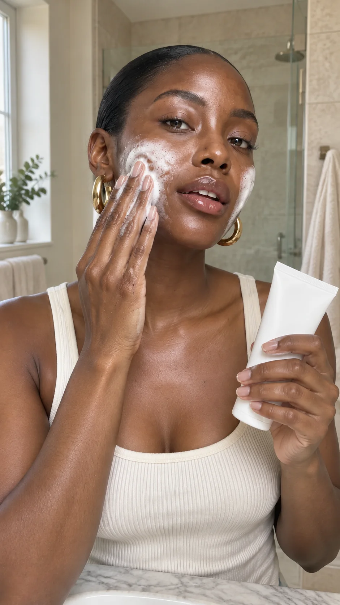
Seen in the video
00:00 — 00:04FOAM TALENT ROSTER
Keep the work, the numbers and the next opportunity close. One place to see the full picture of your talent.
Explore the demo roster ↗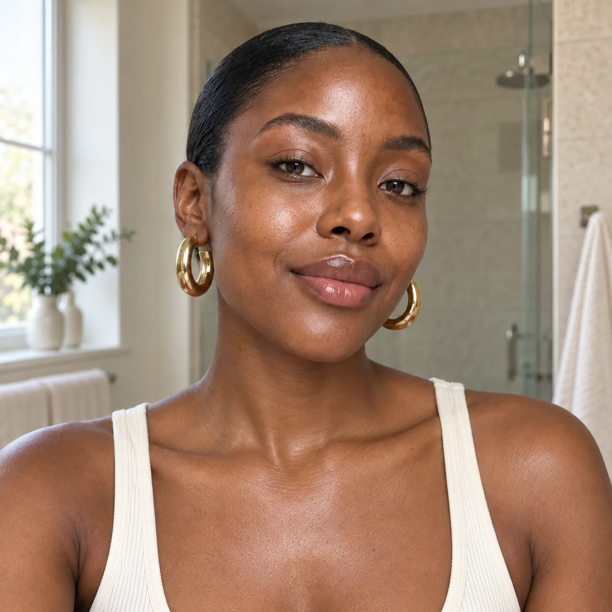
Beauty · Skincare
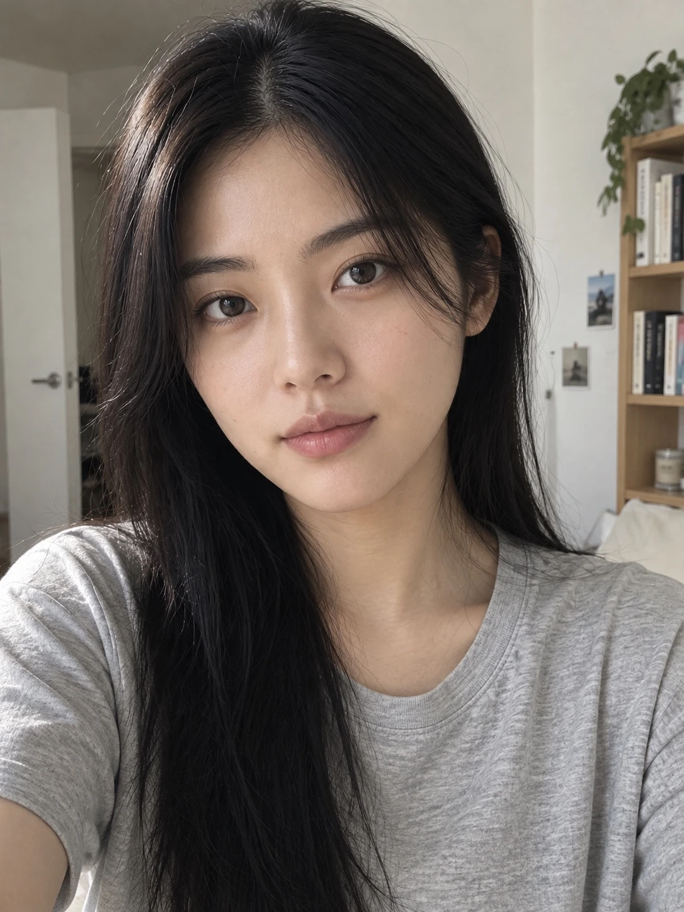
Beauty · Lifestyle
Travel · Lifestyle
Illustrative product previews · Fictional creators and demo figures · Images made with AI
A playful, lightweight product moment. Try the three example searches.
FOUND WITH FOAM
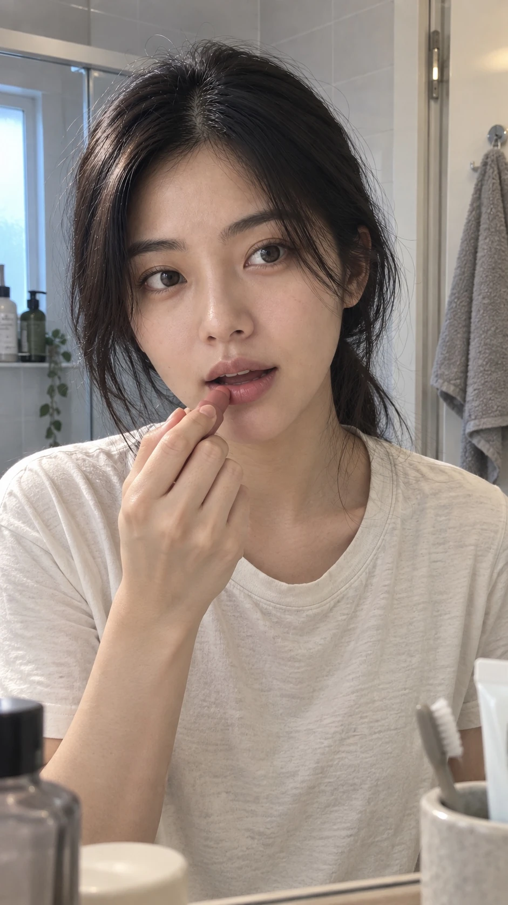
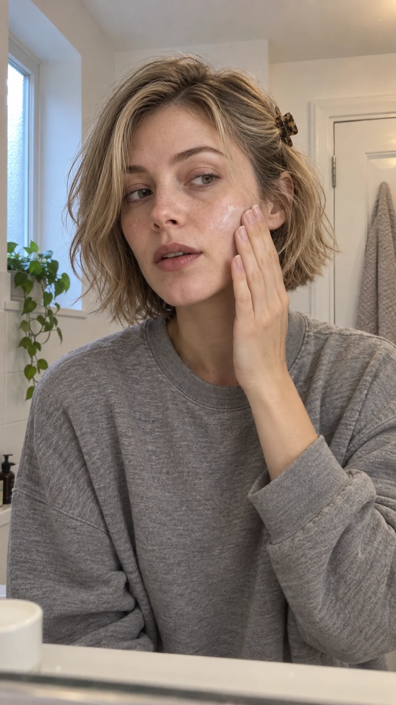
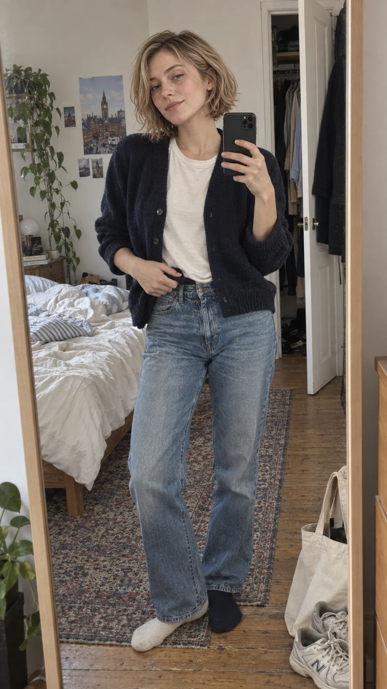
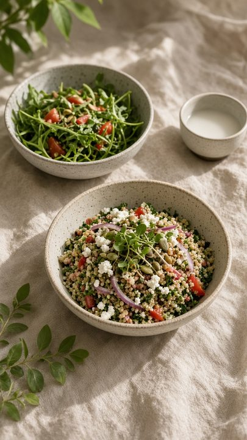
Curated example searches · Illustrative matches and demo figures · Creator imagery made with AI
A chapter from the magazine, given a quieter home on the website.
The stories, the people and the work
that make this industry worth being in.
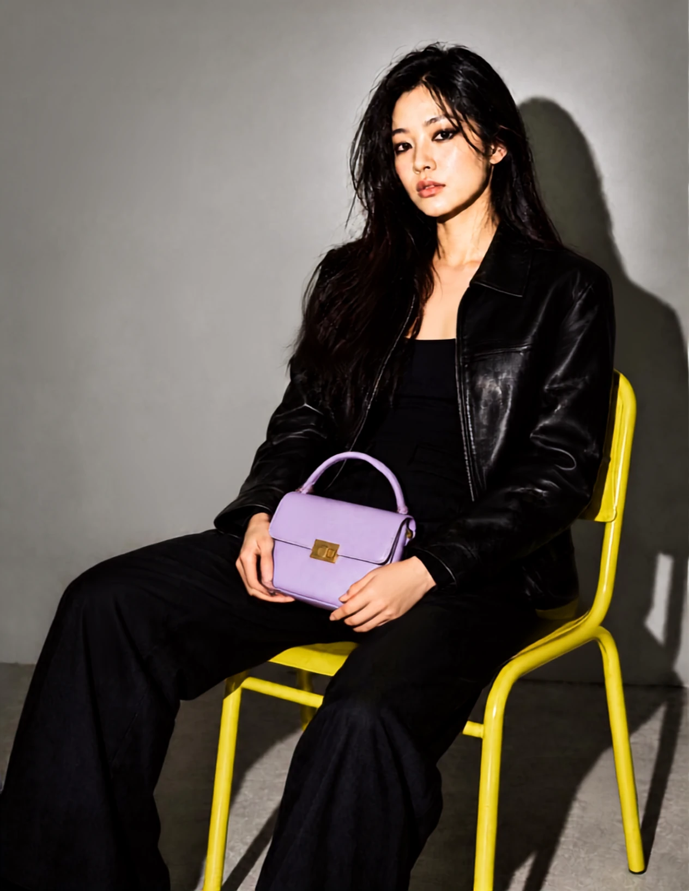
THE FOAM EDITORIALFrom a search
to the next campaign.
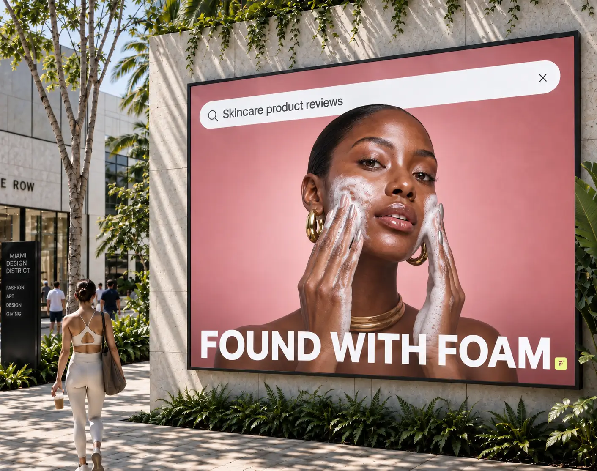
Concept campaign · Made with AIApple-like focus for the Chrome moment, with a familiar store signpost.
FOAM FOR CHROME
Turn “who have we got?” into
“here’s who you should meet.”
Hi Rose,
Samantha came straight to mind. Here’s her media kit.
You can simply tell me the numbers.
Or save a few ideas and copy your notes.
Choose the parts that feel like Foam.
Saved in this browser only. Your notes are not submitted anywhere.